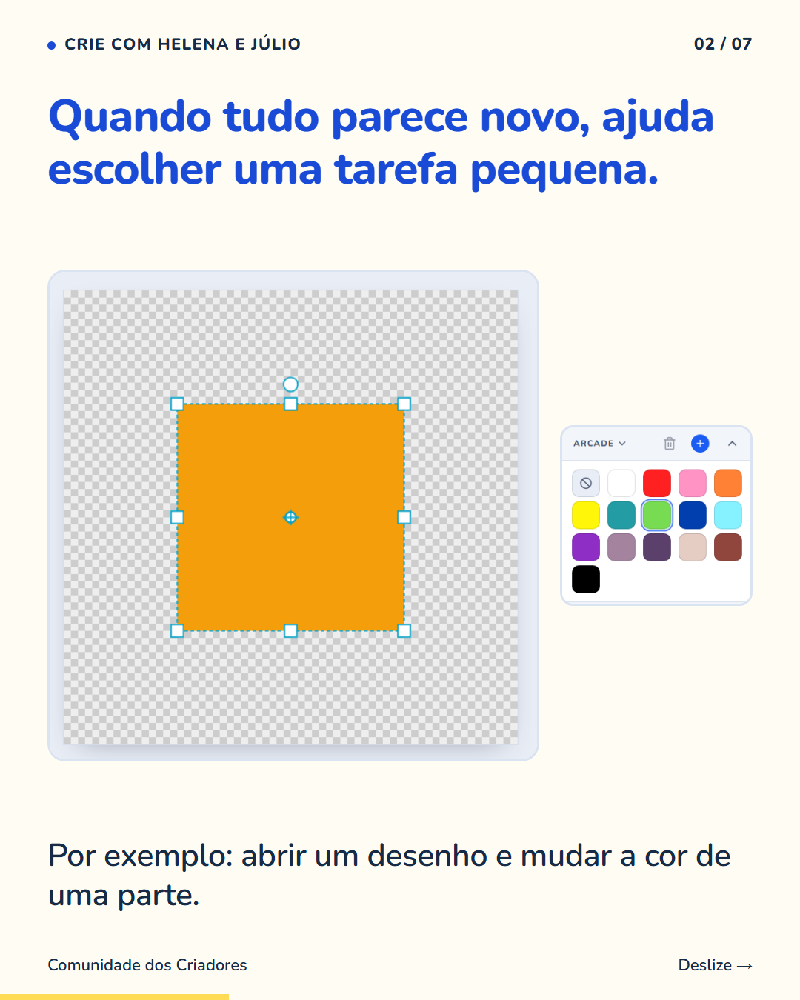
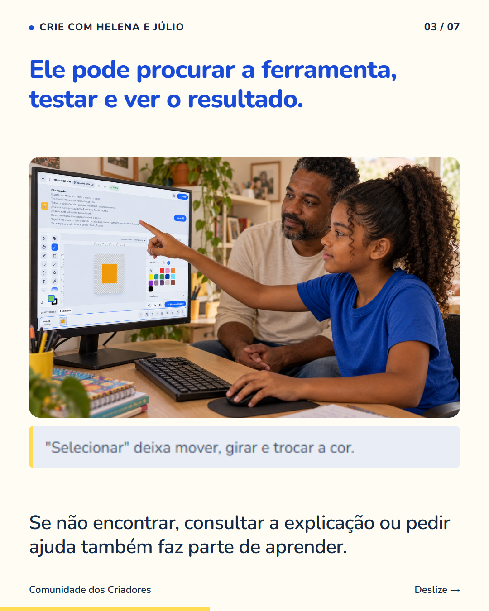
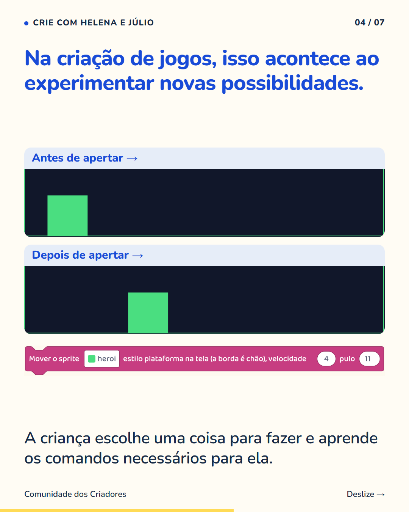
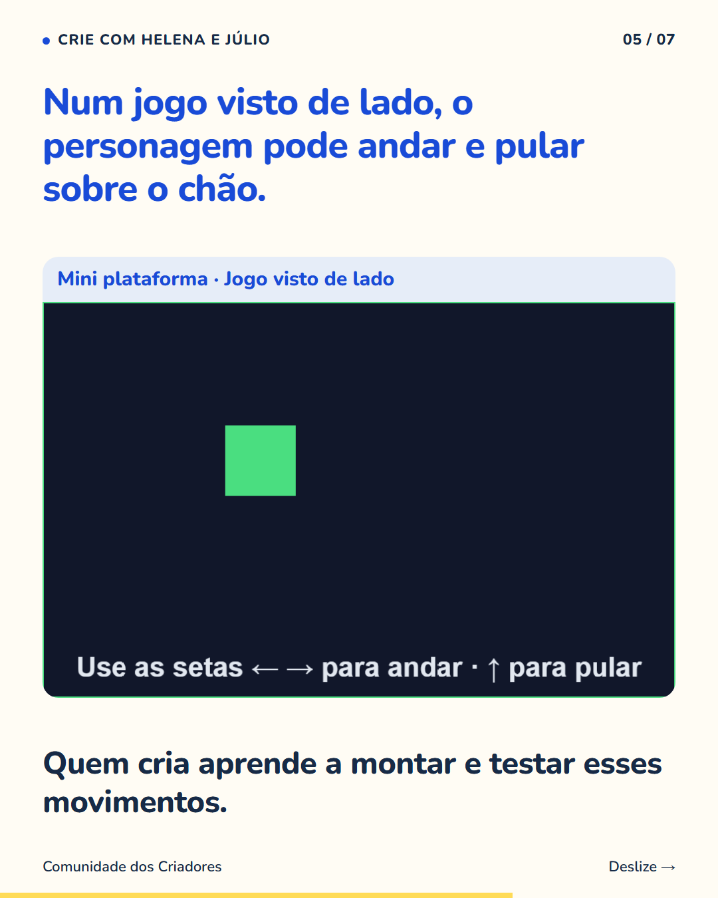
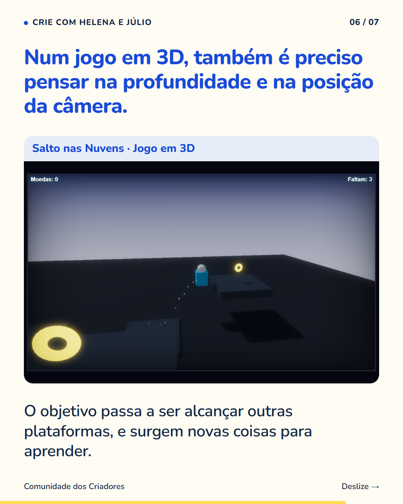
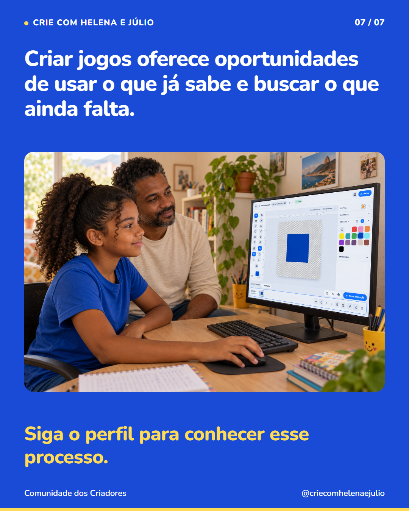

7 slides · 1080 × 1350 · Copy revisada · Uma tarefa pequena para começar a aprender






Aprender uma ferramenta nova fica mais concreto quando existe algo pequeno para fazer nela. Em vez de explorar todas as opções de uma vez, a criança pode começar tentando mover um personagem. Depois, procura como fazê-lo pular. Cada tarefa dá um motivo para conhecer uma parte da ferramenta. Ao passar de um jogo visto de lado para um mundo em 3D, surgem outras decisões, como a posição da câmera. O que ela já aprendeu ajuda a fazer perguntas, e novas explicações ajudam a continuar. Siga o perfil para ver como as crianças podem aprender enquanto constroem os próprios jogos.